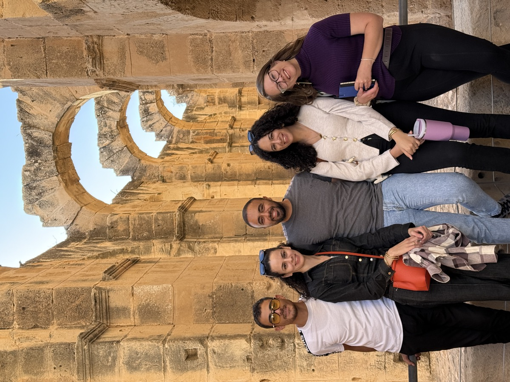
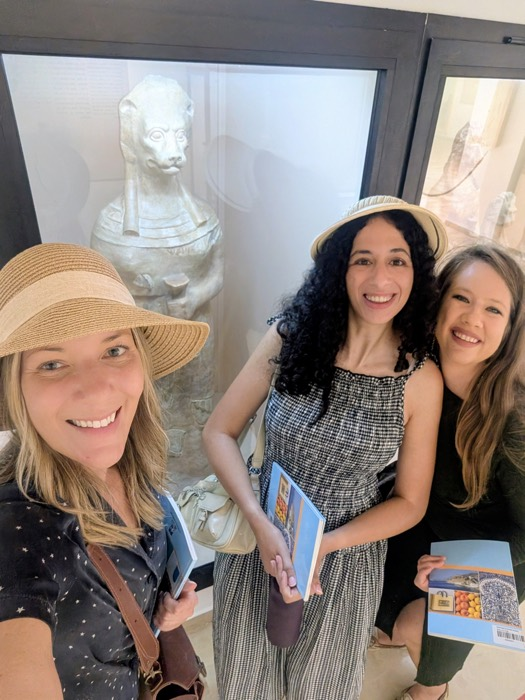
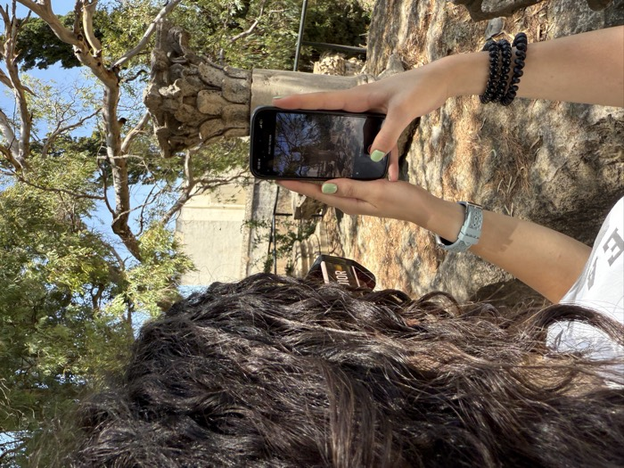
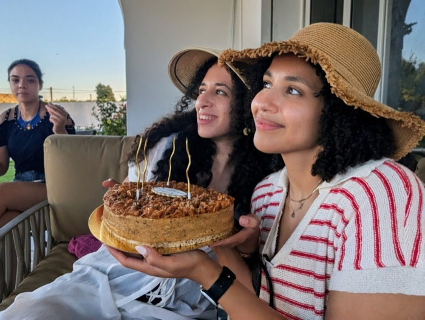
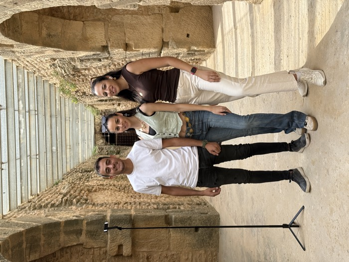
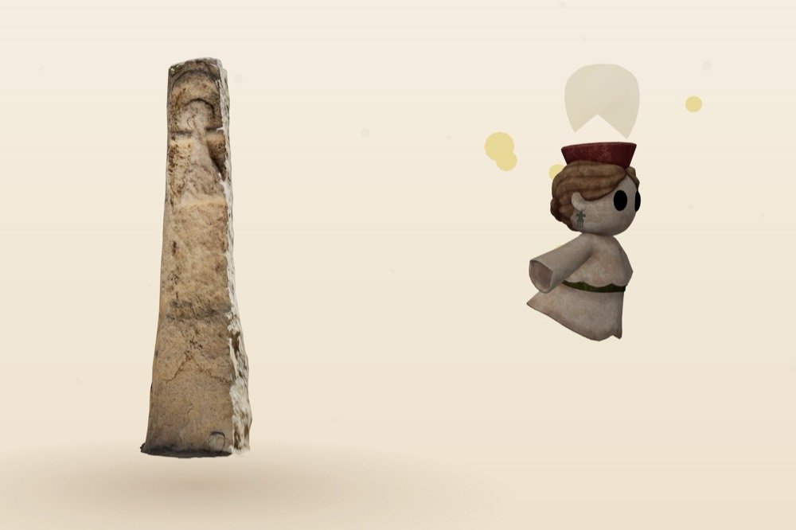
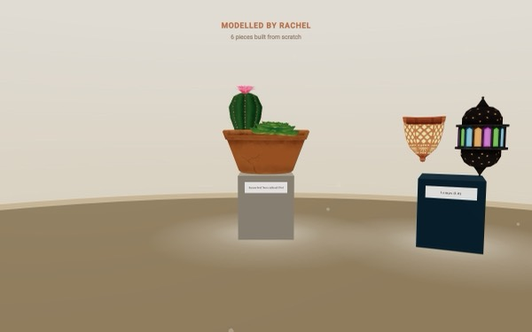

A volunteer community from Tunisia and around the world, scanning endangered heritage in 3D and bringing it to life in AR and VR, and learning from each other along the way.
Tanit XR started with a phone and the ruins Ines grew up next to. Today, volunteers in Tunisia, the US, Europe and Nigeria meet every week to scan, optimize, teach each other history, mentor students and publish research, building a free 3D archive of Tunisia’s heritage, and a model for other under-represented regions.

Volunteers capture statues, mosaics and ruins with their phones. Every scan becomes a permanent, open record.
Explore the Archive →
Remote volunteers turn raw scans into game-ready models, AR lessons and our virtual museum.
Visit the virtual museum →
Weekly community calls, history lessons on the sites we scan, and the Splats With Phones workshop.
Join the community →
Interview prep, portfolio reviews and mentoring for students and early-career volunteers, across four continents.
Volunteer with us →
Papers, conference talks, podcasts and hackathon tracks. We publish what we learn.
Press & recognition →
With the Unique Mappers in Nigeria we are testing the model in a second country. Under-represented heritage everywhere is the goal.
TanitXR & the Unique Mappers →




Tanit XR is a weekly call across time zones as much as it is an archive. We review each other’s scans, learn the history behind them, run workshops, prepare students for interviews, share Tunisian culture, and celebrate wins together.
An evening with the Tanit XR community, planned with TAYP, the Tunisian American Young Professionals. Save the date. Details will follow here and in the newsletter.
Every object our volunteers have scanned in Tunisia, one at a time, in 3D, in your browser. Turn each one with a finger. Nura, our guide, floats beside you and tells you what you are looking at. Save the ones you love, share them, collect badges, step into each maker's own gallery, or put on a headset.

Drag to turn
Beyond scanning, our volunteers model Tunisian lamps, pottery and plants from scratch for our virtual museum. Press View in 3D to spin one around right here.
The storm stripped sediment off the coast at Nabeul and exposed parts of Neapolis, an ancient city lost to a tsunami in the 4th century. Within days our volunteers captured the newly revealed ruins in 3D, a record that exists no matter what the sea does next.
Floods, storms and heat are accelerating erosion across Tunisia’s sites. Every scan is a permanent, open record: even if the physical site is lost, the digital memory survives, for schools, museums and future generations.
Tanit XR was a finalist in the Best Societal Impact category at Augmented World Expo USA 2026, the XR industry's main awards, selected by public vote and expert review.
Kent Bye interviewed Ines Said at AWE USA 2026 about phone-based reality capture, volunteers and heritage at risk.
Ines Said spoke at Augmented World Expo USA 2026 in Long Beach, California, on XR for social impact and heritage.
Nathan Bowser interviewed Ines Said for Niantic Spatial about Tanit XR and the Scaniverse capture of the amphitheatre of El Jem; Niantic published the video on its channels.
Our paper on digital documentation, XR and citizen science for community-driven heritage preservation, presented in April 2026.
Al Jazeera's culture desk profiled Tanit XR in Arabic: a non-profit building a precise digital library of Tunisia's sites and artifacts with photogrammetry and Gaussian splats, before time and neglect erase them.
The method, phones, volunteers, open data, works anywhere heritage is under-documented. In 2026 the Unique Mappers Network began scanning in Nigeria with a mini-grant from our fiscal sponsor. If you want to bring this to your region, talk to us.
Tanit XR is led by a dedicated core team and powered by a growing network of volunteers across Tunisia and the world.
“I joined Tanit XR because I didn’t want to see our history disappear. When you walk through ruins in Carthage or Dougga, you can already see the erosion and damage from weather and time. Volunteering with Tanit XR gave me a way to fight back against that loss. Every scan I help with feels like I’m protecting a piece of Tunisia for future generations.”
Melek Said“I joined Tanit XR because of the community. I love the people involved, and I am so grateful that we get to work together to celebrate our shared global, human heritage and shine a world spotlight on one of the most beautiful countries out there: Tunisia.”
Caroline Nickerson, PhD“I started Tanit XR by simply walking around Carthage with my phone, scanning ruins because I couldn’t stand the idea of them being lost forever. Over time I realized this was bigger than me: people in Tunisia and abroad wanted to help, and it became a movement. Climate change, erosion, and neglect are real threats, but every scan is a way to push back, to make sure our heritage is preserved and celebrated.”
Ines SaidTanit XR is run entirely by volunteers. So far most costs, travel to sites, tools, hosting, hackathon prizes, have been paid out of pocket by our founders, plus a few individual donations through our fiscal sponsor, the Florida Community Innovation Foundation (a US 501(c)(3), so donations are tax-deductible). We are applying for grants and building partnerships to change that. Donations keep the community running: hosting, volunteer hours, optimizing and publishing models, the virtual museum, scanning and site clean-up days, our free course and workshops, and better equipment. Here is what a donation does:
Grants, residencies and open calls for artists and XR creators every one to two weeks, only things we’d apply to ourselves, plus occasional Tanit XR news. Free, unsubscribe any time.